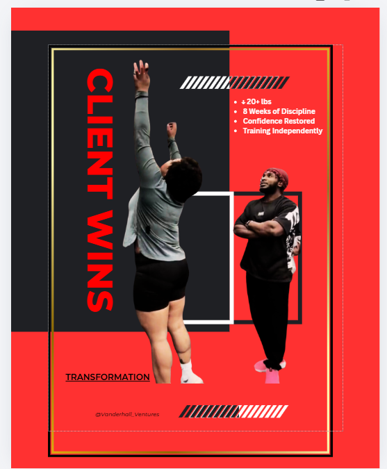
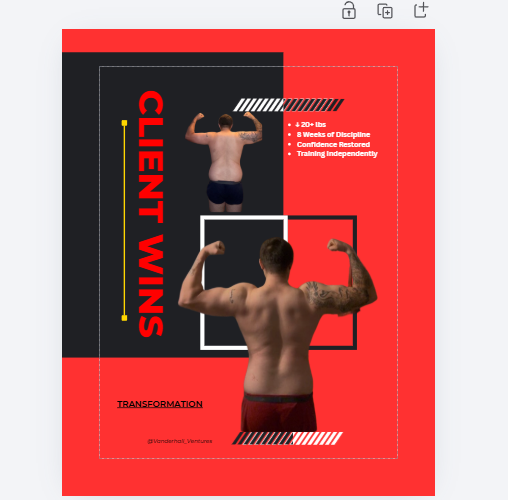

Reset your routine
Use the free five-day guide to get moving and rebuild momentum.
Start free →MENTAL EDGE / BY VANDERHALL VENTURES
For people who keep putting their training on hold. Build a routine that fits real life, one clear action at a time.
Five focused days. A free guide. Your next step forward.

THE WORK IS PERSONAL.
Training. Encouragement.
Showing up for each other.
01 / YOUR STARTING POINT
The free 5-Day Discipline Reset helps you rebuild momentum, make room for training, and practice daily actions you can repeat.
You do not have to change your whole life in five days. Begin with the guide and complete Day 1 today.
Get the free reset ↗Opens Gumroad. Enter 0 in the price field for free access. Optional contributions are available.
WHAT YOU WILL WORK ON
Create structure around your actual responsibilities.
Get moving again with manageable daily wins.
Follow through, reflect, and decide what comes next.
Optional. Checkmarks stay in this browser and are not sent to your coach.
A CLEAR WAY FORWARD
Choose the support you need. You can go directly to the program; the book and custom plan are optional.
Use the free five-day guide to get moving and rebuild momentum.
Start free →Put structure into practice with Mind Over Muscle over eight weeks.
See the program →Find community through Mental Edge or ask about individual support.
Find your support →02 / THE CORE TRAINING PROGRAM
A structured strength and conditioning program for people ready to train four days a week and follow a clear plan.
$27 USD One-time purchase
View program & purchase ↗Checkout, delivery details, and applicable refund terms are shown on Gumroad. Refund information.
INCLUDED IN THE DIGITAL PROGRAM
A four-day split with progressive reps, rest, tempo, and intent.
Make preparation and recovery part of your routine.
Use the program's alternatives when you need a different exercise.
Review progress and plan your next week with the worksheet.
Continue through the second half with a clear framework.
Available as a separate download with the program.
Choose a custom plan if this schedule does not fit your needs. Individual coaching is a separate service.
BUILT TO BREAK BARRIERS.
DRIVEN BY DISCIPLINE.
MEET YOUR FOUNDER
Army veteran. Behavioral health background. ISSA Certified Personal Trainer.
Joseph created Vanderhall Ventures to help people build discipline, physical strength, and a practical routine through fitness and accountability.
Mental Edge brings that work together: clear training, mindset education, and a community that values showing up for each other.
Fitness and mindset education. Not mental health treatment.
PEOPLE BEHIND THE PROGRESS
Training moments from the Vanderhall Ventures community. Every person's starting point and progress are different.


03 / TRAIN. CONNECT. GROW. SERVE.
Mental Edge Brotherhood brings people together around fitness, accountability, personal growth, and service.
Explore the community, share a win, ask a question, or find encouragement for your next step. Community participation does not require buying every VV product.
Built to Break Barriers.
Driven by Discipline.
OPTIONAL RESOURCES
READ / $15 USD
Explore the mindset and personal-responsibility principles behind Mental Edge.
View the e-book ↗PERSONALIZE / $65 USD
A four-week plan built around your goals, schedule, equipment, and experience.
View the custom plan ↗A FEW PRACTICAL ANSWERS
Start with the free reset to rebuild momentum. If you are ready for four weekly training sessions, explore the eight-week program directly.
Vanderhall Ventures is the main brand. Mental Edge is its training and accountability experience. Mind Over Muscle is the eight-week training program, with a separate e-book available as an optional resource.
No. The reset is available through Gumroad as a downloadable guide. Follow the access instructions provided there. Existing members can use the Member app link above.
Follow the download and access instructions supplied by Gumroad. Keep your receipt and access email. If anything is missing, contact joseph@vanderhallventuresllc.com.
The program is designed around four sessions of 60–75 minutes each week. Review the product details before buying. Ask Joseph about the custom blueprint if you need a different plan.
No. It stores five checkmarks in this browser only. It does not create an account, record a signup, or send completion data to Joseph. It is separate from your Gumroad access.
YOUR NEXT STEP CAN BE SIMPLE.